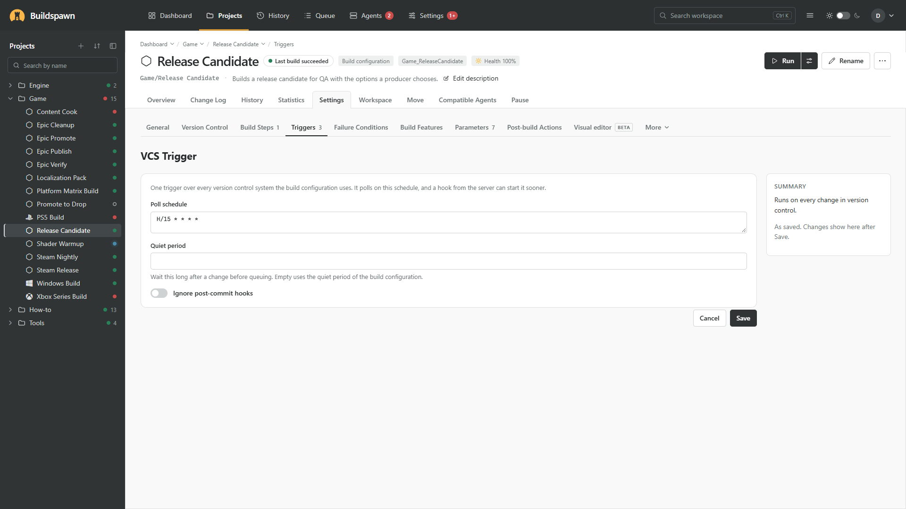

VCS trigger
Starts a build when someone commits or submits a change to a version control root of the build configuration.
When to use it
Use it so every change is built. It is one trigger over every version control system the build configuration uses (Git, Perforce and others). It checks on a schedule, and a hook from the server can start a check sooner.
How to set it up
- Open the build configuration and go to Settings › Triggers.
- Click Add new trigger and click Add next to VCS Trigger.
- Check the Poll schedule (a cron line).
- Optional: set the Quiet period and tick Ignore post-commit hooks.
- Click Save.

Every field
| Field | What it does | Default | Example |
|---|---|---|---|
| Poll schedule | A cron line that says how often to look for changes. It uses the same syntax as the Schedule trigger, with H and an optional first line TZ=Europe/London. | H/15 * * * * (about every 15 minutes) | H/5 * * * * |
| Quiet period (seconds) | How long to wait after a change before the build is queued. Changes that arrive in that time go into one build. Empty uses the quiet period of the build configuration. A whole number, 0 or more. | Empty | 60 |
| Ignore post-commit hooks | Do not start a check when the version control system sends a hook. Only the schedule checks. The version control integration must support this. | Off | On |
A worked example
The Linux Server Build is on a Git root. The trigger polls every five minutes with a quiet period of 60 seconds. Three commits in two minutes give one build with all three changes.
What you see when it runs
The trigger's row on the Triggers page reads Quiet period: 60 s and shows the schedule. The build's cause says it was started by the version control trigger. The Change Log lists the changes.
Problems and fixes
| Problem | What to do |
|---|---|
| Builds start late | The poll schedule is long, or the quiet period is. Shorten them, or set up a hook so the server tells Buildspawn at once. |
| No build after a commit | The change is outside the root's view or path filter, or the trigger is disabled. |
| The quiet period is refused | Use a whole number of seconds. |